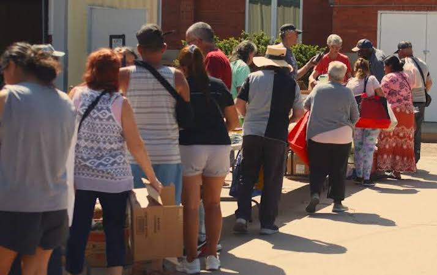
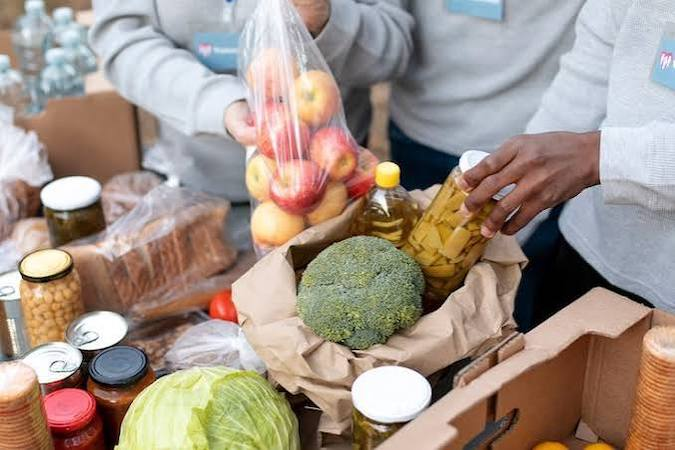
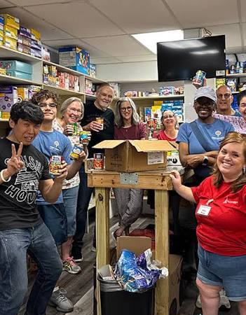
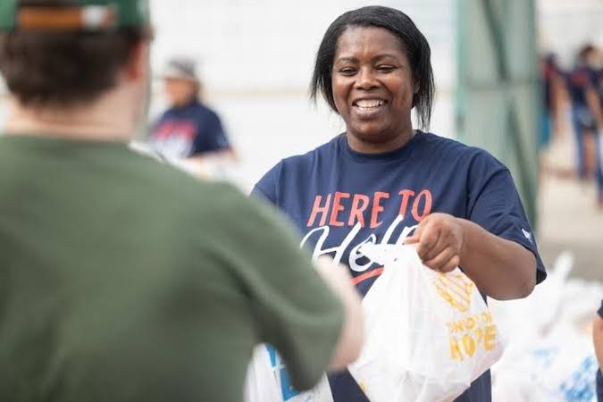
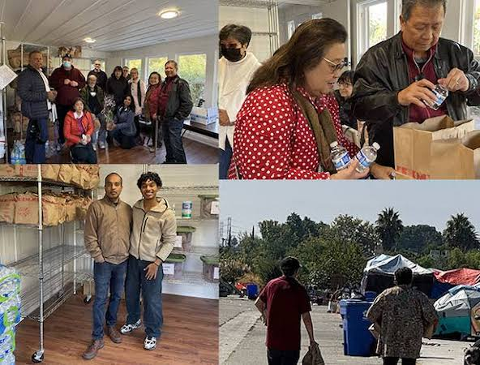
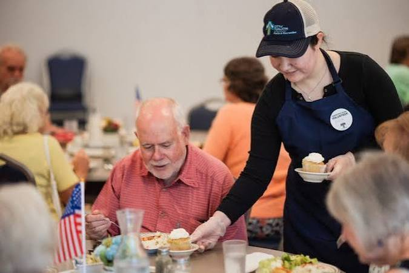

-

Community Wellness
Starts with Kindness, Engagement, & Support
True community wellness is built on a foundation of kindness, engagement, and support. Through our community pantry, local families are supplied with essential grocery goods to ensure no household experiences the stress of food insecurity. Simultaneously, our feeding kitchen provides hot, nutritious meals and a welcoming environment for our unhoused neighbors. By bridging these critical resource gaps, we do more than just feed people—we better equip them for a more sustainable lifestyle.


